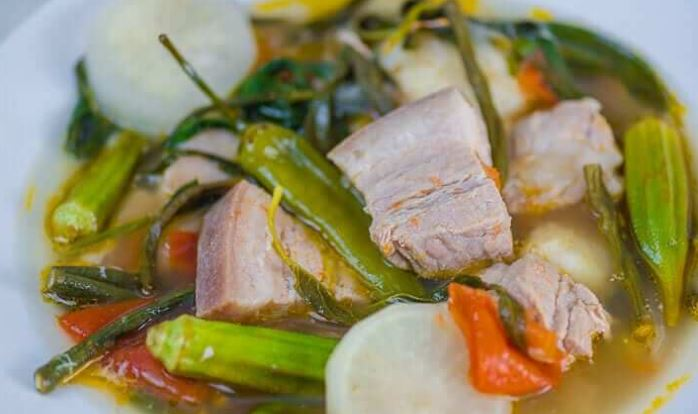
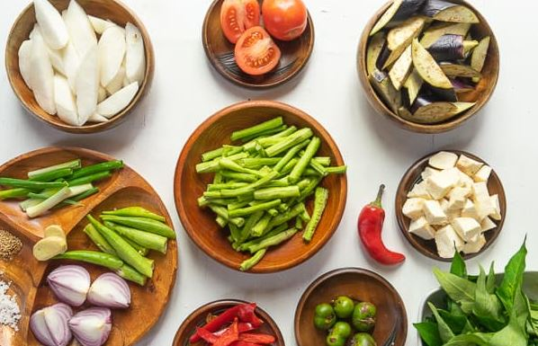

SINIGANG NA BABOY with Gabe
This is a recipe for pork belly soup cooked in sour broth.
It makes use of a variaty of vegetables and is best when
served hot with a cup of rice on the side.

INGREDIENTS:
- Two (2) lbs. pork belly (sliced into cubes)
- Two (2) to Three (3) cups kangkong leaves
- Three (3) siling green chili pepper (siling pansigang)
- Two (2) pieces tomato (quartered)
- One (1) cup sliced daikon radish labanos
- Ten (10) to (12) pieces snake beans (cut in (2) inch length pieces)
- One (1) piece onion quartered
- Fifteen (15)pieces okra
- Two (2) pieces taro peeled and cut in half (gabi)
- Eight (8) cups water
- Two (20) packs Knorr Sinigang sa Sampaloc Mix Original (20 gram pack)
- Three (3) tablespoons fish sauce patis
- (1/4) teaspoon ground black pepper

STEPS:
- Pour water into a cooking pot. Let boil
- Add onion and tomato. Boil for 5 to 8 minutes.
- Put the pork in the cooking pot. Boil for 25 minutes.
- Add the taro. Cover and continue to boil for 30 minutes.
- Add Knorr Sinigang sa Sampaloc mix, fish sauce, and ground black pepper; stir.
- Put the daikon radish in. Cook for 3 to 5 minutes.
- Add the chili peppers, okra, and snake beans. Cook for 7 minutes.
- Add the kangkong. Cover the cooking pot and turn off the heat. Let it stay covered for 5 minutes.
- Transfer to as serving bowl. Serve with a small bowl with patis and spicy chili.
- Eat, Share and Enjoy!